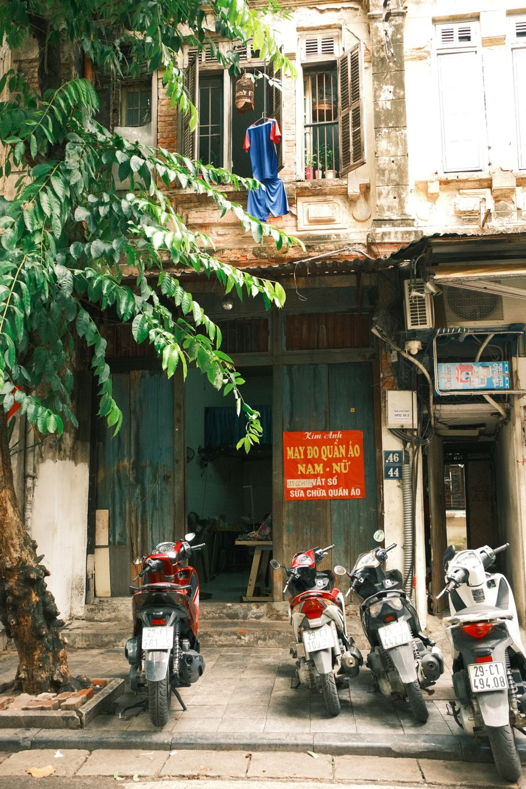
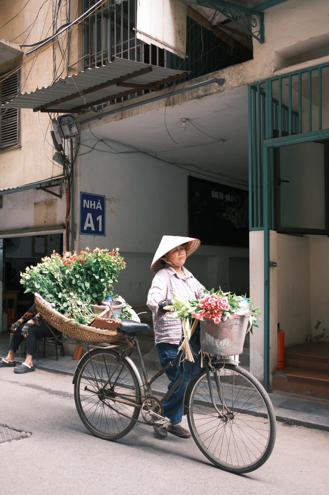

Hanoi Old Quarter
5 places you can
walk to
All in the Old Quarter.
Save this 📌
TRAVELFRAME.VN
1/7
TRAVELFRAME.VN
01
Hoàn Kiếm Lake & Ngọc Sơn Temple
The heart of the city — a lake loop, a red bridge, and Hanoi moving at its own pace around both.
Walk
~5 min from center
Photo
before 9 AM
2/7
TRAVELFRAME.VN
02
Hàng Mã Street
Lanterns, colors and old shop fronts. The street that photographs itself.
Walk
parallel to the lake
Photo
golden hour
3/7

TRAVELFRAME.VN
03
Đồng Xuân Market
The Old Quarter's big classic market. Go in the morning — and eat at the stalls by the doors.
Walk
north end of Old Quarter
Go
morning
4/7
TRAVELFRAME.VN
04
Train Street
The famous railway street. Access can change without notice — follow barriers and security instructions, always.
Walk
mid Old Quarter
Check
access locally
5/7
TRAVELFRAME.VN
05
St. Joseph's Cathedral
The neo-gothic landmark, ringed by coffee shops. The balcony seats across the street are the real photo spot.
Walk
~5 min from the lake
Photo
from a café balcony
6/7
TRAVELFRAME.VN
Old Quarter, done
Save this 📌
Walk it tomorrow.
Five stops, one morning to one full day — you choose the pace.
→
Follow
@travelframe.vn
— Hanoi tips & photo spots
✉
Want a walking route with photo stops built in? DM us.
Photos: Pexels — Thuan Pham. Access & opening info checked Sep 2026 · can change without notice.
7/7